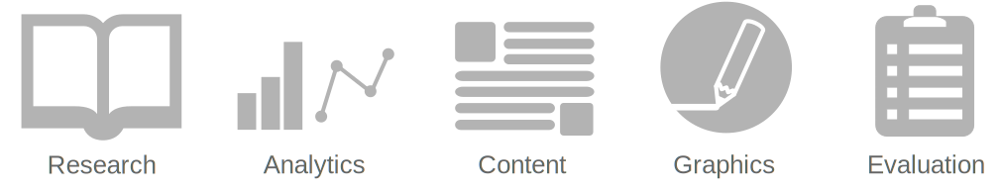

I'm a scientific communications specialist with over 10 years of experience in research and over 4 years of experience in STEM education. I specialize in scientific communication and evaluation services, including:
• grant proposal coordination and writing
• writing & editing of scientific manuscripts and reports
• data analysis and visualization
• content development of educational materials
• science writing for magazines & blogs
• informational graphics
When I'm not busy filling my brain with new research or writing about food and agriculture, I'll be found hiking the coasts and mountains of Northern California, trying not to get too bruised and bloodied while I teach myself mountain biking, and fiddling with new recipes in the kitchen.